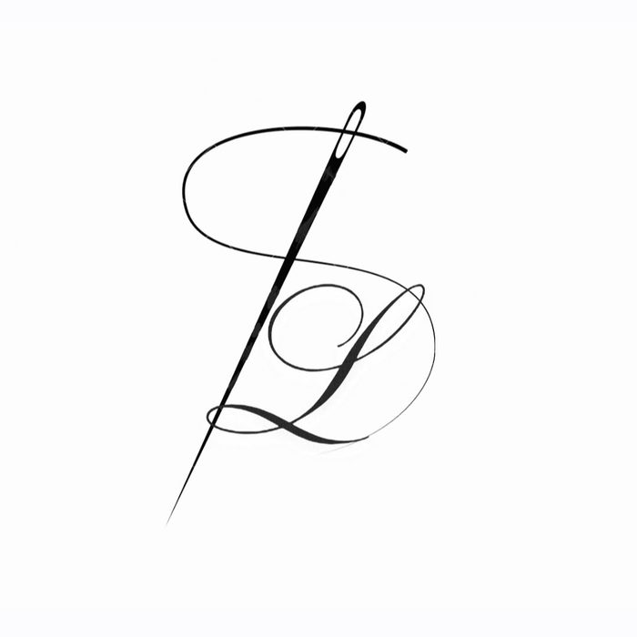
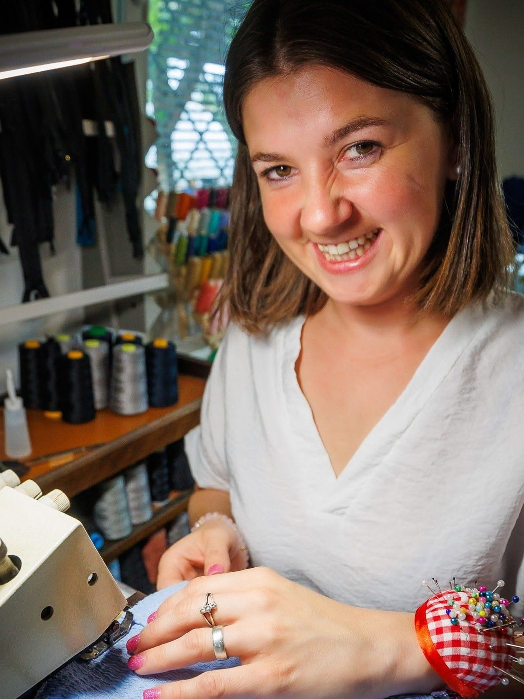

Podjetje
Šiviljstvo Lucija, Lucija Piškurič s.p.
Proizvodnja vrhnjih oblačil
Registrirano 9. 9. 2025
MŠ 7322836000 · DŠ 58002545
O strani
Šivilja iz Črnomlja. Šivanje je moja strast — šiviljska popravila in unikatni izdelki pa moja pot. Od leta 2025 s.p., od nekdaj z iglo v roki.
Delavnica se ne imenuje salon — imenuje se bunker. Ker v njem nastajajo stvari, ki jih drugje ne najdeš: oblačila po meri, popravila, ki jih drugje niso sprejeli, in unikati iz blaga, ki čaka na pravi zamah škarij.
Delam počasi in natančno. Vsak kos, ki pride k meni, najprej pogledam in se ga dotaknem — blago pove več kot slika. Potem sva z odločitvijo: kaj je mogoče, kaj je smiselno in kaj se splača.
»Vsak kos pride z zgodbo. Moje delo je, da odide z boljšo.«
Ko ne šivam, sem na Belokranski cesti dosegljiva za ogled kosov in klepet o blagu. Vstopi — vrata bunkerja so odprta tudi zato, da vsakdo vpraša, kaj potrebuje.


Podatki
Šiviljstvo Lucija, Lucija Piškurič s.p.
Proizvodnja vrhnjih oblačil
Registrirano 9. 9. 2025
MŠ 7322836000 · DŠ 58002545
Belokranjska cesta 14
8340 Črnomelj, Bela Krajina
Ogled po predhodnem dogovoru.
LUCIJIN BUNKER
lucijinbunker@gmail.com
Facebook in Instagram:
@siviljstvolbunker
ODGOVORIM V 1–2 DNIH